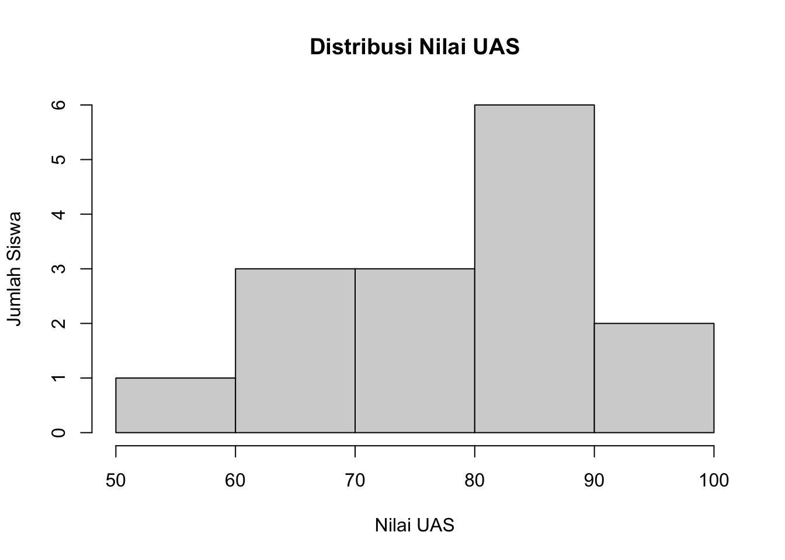
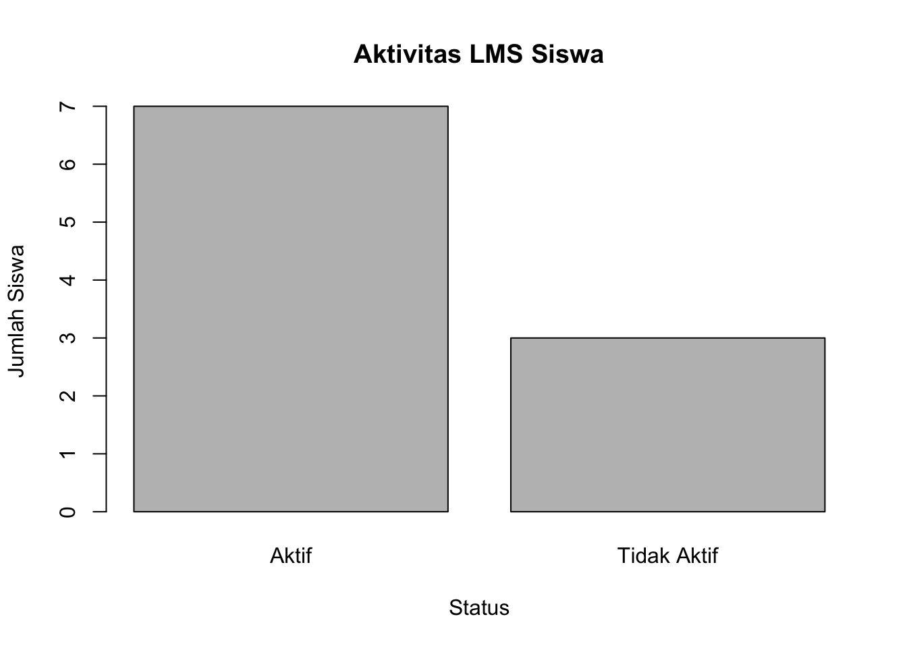
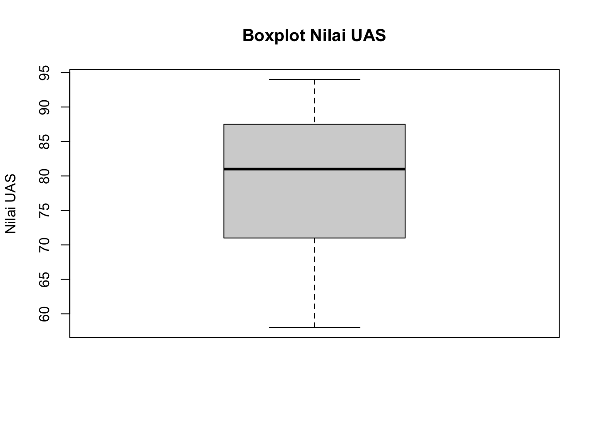
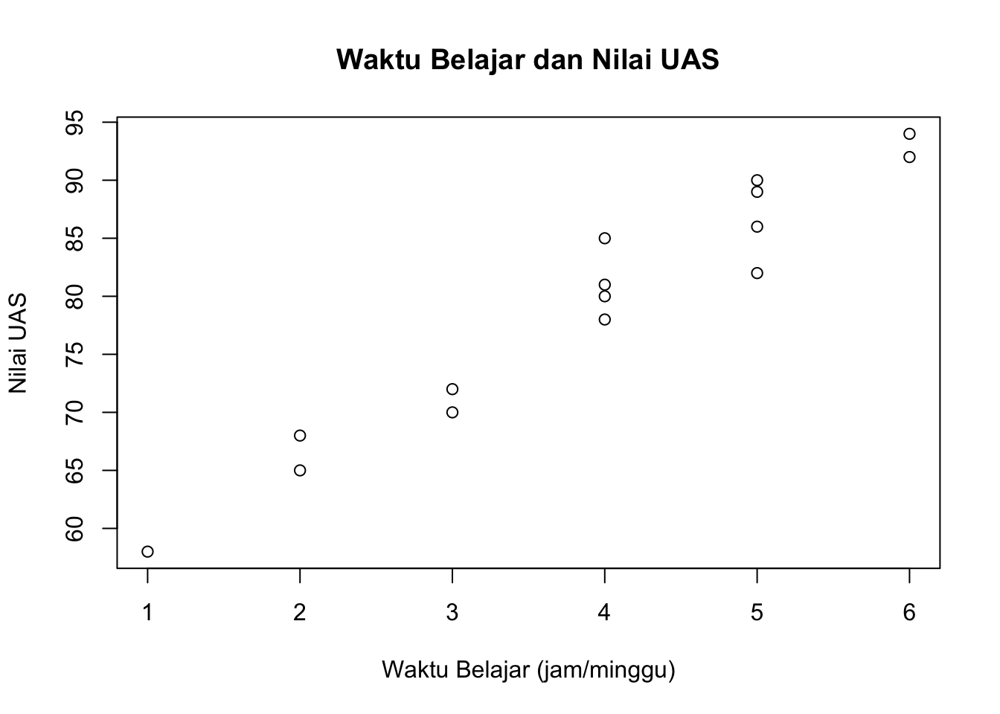

nilai_uas <- c(
82, 80, 72, 94, 65,
78, 86, 90, 68, 92,
70, 81, 85, 89, 58
)Exploratory Data Analysis (EDA)
Data Mining (MI0439)
Capaian Pembelajaran
Setelah mengikuti pertemuan ini, mahasiswa mampu:
- menjelaskan konsep dasar Exploratory Data Analysis (EDA);
- menggunakan statistik deskriptif untuk memahami karakteristik data pendidikan;
- memilih visualisasi yang sesuai dengan jenis data;
- menginterpretasikan hasil statistik dan visualisasi;
- melakukan eksplorasi sederhana terhadap dataset pendidikan.
Mengapa Data Perlu Dieksplorasi?
Pada pertemuan sebelumnya, kita telah mempelajari bagaimana mengidentifikasi dan menangani masalah pada data pendidikan.
Data yang telah dibersihkan belum tentu langsung memberikan informasi yang mudah dipahami.
Misalnya, kita memiliki data:
- nilai tugas;
- nilai kuis;
- kehadiran;
- waktu belajar;
- aktivitas LMS;
- nilai ujian.
Kita mungkin ingin mengetahui:
Apakah nilai siswa cenderung tinggi atau rendah?
Bagaimana distribusi nilai siswa?
Apakah terdapat siswa dengan nilai yang sangat berbeda?
Apakah siswa dengan kehadiran tinggi cenderung memiliki nilai yang lebih baik?
Apakah siswa yang aktif menggunakan LMS memiliki hasil belajar yang berbeda?
Untuk menjawab pertanyaan awal tersebut, kita membutuhkan Exploratory Data Analysis (EDA).
Apa itu EDA?
Exploratory Data Analysis (EDA) adalah proses mengeksplorasi data untuk memahami karakteristik, pola, hubungan, dan kemungkinan masalah dalam data.
EDA membantu kita menemukan:
- karakteristik data;
- distribusi data;
- pola;
- perbedaan antar kelompok;
- hubungan antarvariabel;
- nilai yang tidak biasa;
- pertanyaan yang dapat dianalisis lebih lanjut.
Secara sederhana:
EDA membantu kita bertanya kepada data: “Apa yang sebenarnya ada di dalam data ini?”
EDA tidak hanya membuat grafik. EDA menggabungkan:
Data → Statistik Deskriptif → Visualisasi → Interpretasi → Pertanyaan Baru
EDA dalam Educational Data Mining
Dalam Educational Data Mining (EDM), EDA dapat digunakan untuk memahami perilaku dan hasil belajar siswa.
| Pertanyaan | Data | Analisis |
|---|---|---|
| Bagaimana distribusi nilai siswa? | Nilai UAS | Histogram, mean, median |
| Berapa banyak siswa yang aktif di LMS? | Aktivitas LMS | Bar chart |
| Bagaimana penyebaran nilai? | Nilai UAS | Boxplot |
| Apakah waktu belajar berkaitan dengan nilai? | Waktu belajar + nilai | Scatter plot |
| Apakah nilai berbeda berdasarkan aktivitas LMS? | Aktivitas LMS + nilai | Boxplot |
EDA dapat membantu peneliti atau pendidik menentukan pertanyaan yang lebih spesifik untuk tahap analisis berikutnya.
Statistik Deskriptif
Statistik deskriptif digunakan untuk meringkas data sehingga karakteristiknya lebih mudah dipahami.
| Ukuran | Fungsi |
|---|---|
Jumlah data (n) |
Mengetahui banyaknya observasi |
| Minimum | Nilai terkecil |
| Maksimum | Nilai terbesar |
| Mean | Nilai rata-rata |
| Median | Nilai tengah |
| Kuartil | Menunjukkan posisi data dalam distribusi |
| Standar deviasi | Menggambarkan penyebaran data |
Mean
Mean atau rata-rata dihitung dengan:
\bar{x} = \frac{1}{n}\sum_{i=1}^{n}x_i
Misalnya nilai lima siswa:
70,\ 75,\ 80,\ 85,\ 90
maka:
\bar{x} = \frac{70+75+80+85+90}{5} = 80
Mean memberikan gambaran mengenai pusat data.
Namun, mean dapat dipengaruhi oleh nilai yang sangat ekstrem.
Median
Median adalah nilai tengah setelah data diurutkan.
Contoh:
60,\ 70,\ 75,\ 80,\ 95
Median = 75.
Jika jumlah data genap, median diperoleh dari rata-rata dua nilai tengah.
Median dapat memberikan gambaran yang lebih representatif ketika terdapat nilai ekstrem.
Mean dan Median
Perhatikan data berikut:
60,\ 65,\ 70,\ 75,\ 200
Mean:
\bar{x}=94
Sedangkan median:
70
Nilai 200 membuat mean menjadi jauh lebih tinggi daripada sebagian besar data.
Karena itu, dalam EDA kita sebaiknya tidak hanya melihat mean.
Mean dan median dapat memberikan informasi yang berbeda mengenai pusat data.
Ukuran Penyebaran
Mengetahui rata-rata saja belum cukup.
Perhatikan dua kelompok berikut.
Kelas A
78,\ 79,\ 80,\ 81,\ 82
Kelas B
60,\ 70,\ 80,\ 90,\ 100
Keduanya memiliki rata-rata yang sama, tetapi penyebaran nilainya berbeda.
Salah satu ukuran penyebaran adalah standar deviasi.
- Standar deviasi kecil → data cenderung dekat dengan rata-rata.
- Standar deviasi besar → data lebih menyebar.
Statistik Deskriptif dengan R
Misalkan kita memiliki data nilai UAS:
Mean:
mean(nilai_uas)[1] 79.33333Median:
median(nilai_uas)[1] 81Standar deviasi:
sd(nilai_uas)[1] 10.6949Nilai minimum dan maksimum:
min(nilai_uas)[1] 58max(nilai_uas)[1] 94Ringkasan Data dengan summary()
R menyediakan fungsi summary() untuk memperoleh ringkasan statistik secara cepat.
summary(nilai_uas) Min. 1st Qu. Median Mean 3rd Qu. Max.
58.00 71.00 81.00 79.33 87.50 94.00 Output akan memberikan:
- Minimum
- Kuartil pertama
- Median
- Mean
- Kuartil ketiga
- Maksimum
Fungsi ini sangat berguna sebagai langkah awal EDA.
Visualisasi Data
Visualisasi membantu kita melihat pola yang sulit dikenali hanya dari angka.
Pemilihan grafik harus disesuaikan dengan jenis data dan pertanyaan yang ingin dijawab.
| Tujuan | Jenis data | Visualisasi |
|---|---|---|
| Melihat distribusi | Numerik | Histogram |
| Membandingkan frekuensi kategori | Kategorik | Bar chart |
| Melihat penyebaran | Numerik | Boxplot |
| Membandingkan kelompok | Numerik + kategorik | Boxplot |
| Melihat hubungan | Numerik + numerik | Scatter plot |
Histogram
Histogram digunakan untuk melihat distribusi variabel numerik.
Contohnya:
- nilai ujian;
- nilai tugas;
- waktu belajar;
- jumlah aktivitas LMS.
hist(
nilai_uas,
main = "Distribusi Nilai UAS",
xlab = "Nilai UAS",
ylab = "Jumlah Siswa"
)
Histogram membantu kita melihat:
- di mana sebagian besar data berada;
- apakah data cenderung simetris;
- apakah terdapat nilai ekstrem;
- apakah distribusi memiliki pola tertentu.
Bar Chart
Bar chart digunakan terutama untuk melihat frekuensi kategori.
Misalnya status aktivitas LMS:
aktivitas <- c(
"Aktif", "Aktif", "Aktif", "Tidak Aktif", "Aktif",
"Tidak Aktif", "Aktif", "Aktif", "Tidak Aktif", "Aktif"
)
barplot(
table(aktivitas),
main = "Aktivitas LMS Siswa",
xlab = "Status",
ylab = "Jumlah Siswa"
)
Dari grafik tersebut kita dapat melihat jumlah siswa dalam setiap kategori.
Boxplot
Boxplot digunakan untuk melihat:
- median;
- kuartil;
- penyebaran data;
- kemungkinan nilai ekstrem.
boxplot(
nilai_uas,
main = "Boxplot Nilai UAS",
ylab = "Nilai UAS"
)
Boxplot juga berguna untuk membandingkan distribusi nilai antar kelompok.
Scatter Plot
Scatter plot digunakan untuk melihat pola hubungan antara dua variabel numerik.
Misalnya:
Apakah waktu belajar berkaitan dengan nilai UAS?
waktu_belajar <- c(
5, 4, 3, 6, 2,
4, 5, 5, 2, 6,
3, 4, 4, 5, 1
)
plot(
waktu_belajar,
nilai_uas,
main = "Waktu Belajar dan Nilai UAS",
xlab = "Waktu Belajar (jam/minggu)",
ylab = "Nilai UAS"
)
Perhatikan apakah titik-titik menunjukkan pola tertentu.
Korelasi Bukan Sebab-Akibat
Jika scatter plot menunjukkan bahwa siswa dengan waktu belajar lebih tinggi cenderung memiliki nilai lebih tinggi, kita dapat mengatakan:
Terdapat pola hubungan antara waktu belajar dan nilai.
Namun, kita belum dapat langsung menyimpulkan:
Waktu belajar menyebabkan nilai siswa meningkat.
Hubungan atau korelasi tidak selalu menunjukkan sebab-akibat.
Bisa terdapat faktor lain, seperti:
- motivasi belajar;
- kemampuan awal;
- dukungan orang tua;
- kualitas pembelajaran;
- akses terhadap sumber belajar.
Eksplorasi Satu Variabel
Eksplorasi satu variabel disebut univariate analysis.
Contoh variabel numerik:
- nilai UAS;
- nilai tugas;
- kehadiran;
- waktu belajar.
Contoh variabel kategorik:
- jenis kelamin;
- status aktivitas LMS;
- kelas;
- kategori kehadiran.
Pertanyaan utama:
“Bagaimana karakteristik variabel ini?”
Eksplorasi Dua Variabel
Kita juga dapat mengeksplorasi dua variabel untuk menemukan pola atau hubungan.
| Variabel 1 | Variabel 2 | Visualisasi |
|---|---|---|
| Kehadiran | Nilai UAS | Scatter plot |
| Waktu belajar | Nilai UAS | Scatter plot |
| Aktivitas LMS | Nilai UAS | Boxplot |
| Kelas | Nilai UAS | Boxplot |
| Status LMS | Jumlah siswa | Bar chart |
Pertanyaan berubah dari:
“Bagaimana distribusi nilai?”
menjadi:
“Apakah nilai menunjukkan pola tertentu berdasarkan variabel lain?”
Dataset Praktikum
Gunakan dataset siswa yang telah dibersihkan pada pertemuan sebelumnya.
Contoh:
| ID | JK | Kehadiran | Nilai Tugas | Nilai Kuis | Waktu Belajar | Aktivitas LMS | Nilai UAS |
|---|---|---|---|---|---|---|---|
| S001 | L | 95 | 85 | 80 | 5 | Aktif | 82 |
| S002 | P | 90 | 78 | 75 | 4 | Aktif | 80 |
| S003 | L | 85 | 70 | 68 | 3 | Aktif | 72 |
| S004 | P | 98 | 92 | 90 | 6 | Aktif | 94 |
| S005 | L | 75 | 60 | 55 | 2 | Tidak Aktif | 65 |
| S006 | P | 88 | 80 | 78 | 4 | Aktif | 78 |
| S007 | L | 92 | 85 | 82 | 5 | Aktif | 86 |
| S008 | P | 95 | 88 | 85 | 5 | Aktif | 90 |
| S009 | L | 80 | 72 | 70 | 2 | Tidak Aktif | 68 |
| S010 | P | 95 | 90 | 88 | 6 | Aktif | 92 |
| S011 | P | 85 | 75 | 72 | 3 | Tidak Aktif | 70 |
| S012 | L | 90 | 80 | 78 | 4 | Aktif | 81 |
| S013 | P | 88 | 82 | 80 | 4 | Aktif | 85 |
| S014 | P | 94 | 87 | 84 | 5 | Aktif | 89 |
| S015 | L | 70 | 55 | 50 | 1 | Tidak Aktif | 58 |
Praktikum EDA
Lakukan eksplorasi terhadap dataset.
Statistik Deskriptif
Hitung:
- jumlah siswa;
- nilai minimum;
- nilai maksimum;
- mean;
- median;
- standar deviasi.
Fokuskan pada:
- kehadiran;
- nilai tugas;
- nilai kuis;
- waktu belajar;
- nilai UAS.
Visualisasi
Buat minimal:
- 1 bar chart;
- 1 histogram;
- 1 boxplot;
- 1 scatter plot.
Pertanyaan Eksplorasi
Gunakan pertanyaan berikut untuk memandu eksplorasi.
Nilai
- Berapa rata-rata nilai UAS?
- Apakah median berbeda jauh dari mean?
- Bagaimana penyebaran nilai UAS?
Kehadiran
- Bagaimana distribusi kehadiran siswa?
- Apakah terdapat siswa dengan kehadiran yang sangat rendah?
Aktivitas LMS
- Berapa banyak siswa yang aktif dan tidak aktif?
- Apakah distribusi nilai terlihat berbeda antara kedua kelompok?
Waktu belajar
- Bagaimana distribusi waktu belajar?
- Apakah siswa dengan waktu belajar lebih tinggi cenderung memperoleh nilai UAS lebih tinggi?
Aktivitas Kelompok
Eksplorasi Dataset Pendidikan
Setiap kelompok memperoleh dataset siswa yang telah melalui proses preprocessing.
Tugas kelompok:
- Memahami struktur dataset.
- Menghitung statistik deskriptif.
- Membuat visualisasi.
- Menemukan minimal 3 temuan dari data.
- Menuliskan interpretasi setiap temuan.
Output Kelompok
Hasil eksplorasi disusun dalam alur:
Dataset → Statistik Deskriptif → Visualisasi → Temuan → Interpretasi
Contoh:
Temuan: Siswa dengan status LMS “Aktif” cenderung memiliki nilai UAS lebih tinggi dibandingkan siswa dengan status “Tidak Aktif”.
Temuan harus didukung oleh angka atau visualisasi.
Interpretasi, Bukan Sekadar Membuat Grafik
Dalam EDA, membuat grafik bukan tujuan akhir.
Mahasiswa harus mampu menjelaskan apa yang ditunjukkan oleh grafik.
Contoh interpretasi:
Histogram menunjukkan bahwa sebagian besar nilai UAS berada pada rentang 70–90, sedangkan beberapa siswa memperoleh nilai di bawah 60.
Lebih baik daripada:
Histogram nilai UAS telah dibuat.
EDA membutuhkan interpretasi terhadap informasi yang ditampilkan oleh data.
Kesalahan yang Sering Terjadi
| Kesalahan | Masalah |
|---|---|
| Membuat grafik tanpa interpretasi | Tidak menghasilkan informasi |
| Menggunakan grafik yang tidak sesuai | Data sulit dibaca |
| Hanya melihat mean | Distribusi data dapat terabaikan |
| Mengabaikan outlier | Pola dapat disalahartikan |
| Menganggap korelasi sebagai sebab-akibat | Kesimpulan terlalu jauh |
| Menghapus data tanpa alasan | Informasi dapat hilang |
| Membuat terlalu banyak grafik | Eksplorasi menjadi tidak fokus |
Inti Pembelajaran
| Konsep | Inti |
|---|---|
| EDA | Mengeksplorasi data untuk memahami karakteristik dan pola |
| Mean | Nilai rata-rata |
| Median | Nilai tengah |
| Standar deviasi | Ukuran penyebaran |
| Histogram | Distribusi data numerik |
| Bar chart | Frekuensi kategori |
| Boxplot | Distribusi dan perbandingan kelompok |
| Scatter plot | Pola hubungan dua variabel numerik |
| Interpretasi | Menjelaskan makna statistik dan visualisasi |
Exit Ticket
Jawab secara singkat:
Apa satu hal baru yang Anda temukan dari dataset hari ini?
Kemudian:
Visualisasi apa yang paling tepat untuk mengetahui hubungan antara waktu belajar dan nilai UAS? Mengapa?
Terakhir:
Apa perbedaan antara “membuat grafik” dan “melakukan EDA”?